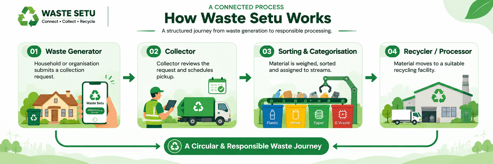

Updates and service announcements will be published here.
INDIA WASTE SNAPSHOT
Municipal solid waste generated: 185,195 tonnes/day · 2023–24
Municipal solid waste collected: 179,479 tonnes/day · 2023–24
Municipal solid waste treated: 114,110 tonnes/day · 2023–24
Plastic waste generated: 4,136,189 tonnes/year · 2022–23
E-waste generated: 1,254,287 tonnes/year · 2023–24
E-waste recycled: 778,205 tonnes/year · 2023–24
E-waste generated: 1,397,956 tonnes/year · 2024–25
E-waste recycled: 1,159,228 tonnes/year · 2024–25
Waste Management Portals
Choose a portal to view its registration categories and services.
⌂
Domestic Waste
Households and adminstration pickup requests and local collectors.
Open portal → ▣E-Waste
Producer, manufacturer, recycler and refurbisher.
Open portal → ▰Battery Waste
Producer, recycler and refurbisher.
Open portal → ◇Plastic Waste
PIBO, PWP, ULB and SIMP stakeholders.
Open portal → ◉Rubber & Tyres
Producer, recycler and retreader.
Open portal → ▤Metal Waste
Separate metal and non-metal streams.
Open portal → ▧Paper & Cardboard
ULB, collectors, manufacturers and recyclers.
Open portal → ❋Organic Waste
Aggregators, biogas and BIO-CNG facilities.
Open portal → ◈Oil & Chemicals
Importers, collectors, producers and recyclers.
Open portal →
Notices & Announcements
Updates published by the Waste Setu administration will appear here.
View resources and guidance →Review requirements applicable to your selected category.
Contact the support team for help with platform workflows.